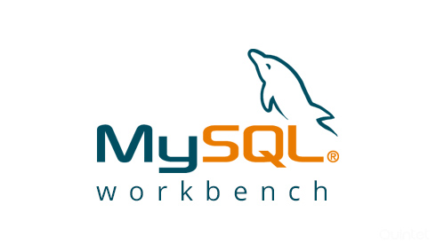

O projeto consistiu na modelagem conceitual e lógica de um banco de dados relacional voltado para o gerenciamento de um sistema de vendas. O foco central desta etapa foi estruturar a arquitetura da informação, analisando como os dados reais são abstraídos e organizados antes da fase de codificação. Para garantir a integridade e a escalabilidade, o sistema foi fundamentado nos princípios de Bancos de Dados Relacionais, garantindo o armazenamento eficiente e o relacionamento estruturado entre os dados. Na parte de documentação e engenharia, foi aplicado o Diagrama Entidade-Relacionamento (DER), criando uma representação visual da lógica do sistema para mapear entidades essenciais (como clientes, produtos e pedidos), seus respectivos atributos e as regras de cardinalidade que definem a interação entre as tabelas.

A implementação técnica do projeto baseou-se exclusivamente no desenvolvimento analítico do Diagrama Entidade-Relacionamento (DER) e foi desenvolvida no ambiente MySQL Workbench. A modelagem estrutural desenvolvida pelo aluno contemplou:
Definição das entidades fundamentais (CLIENTE, PRODUTO, PEDIDO) e seus respectivos atributos. Isso incluiu a estipulação de tipagens lógicas (numéricos, textos e valores monetários) e a definição de chaves primárias (PK) para garantir a identificação única.
Estruturação das ligações hierárquicas entre as tabelas, estabelecendo, por exemplo, o relacionamento onde um único cliente pode ser o titular de múltiplos pedidos independentes.
Solução gráfica da relação complexa onde um pedido pode conter vários produtos e um produto pode constar em vários pedidos. Isso foi resolvido com a criação da entidade associativa ITEM_PEDIDO, utilizando chaves estrangeiras (FK) para normalizar a estrutura.